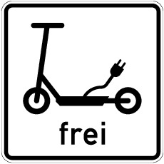

(1) Innerhalb geschlossener Ortschaften dürfen Elektrokleinstfahrzeuge nur baulich angelegte Radwege, darunter auch gemeinsame Geh- und Radwege (Zeichen 240 der Anlage 2 zur Straßenverkehrs-Ordnung) und die dem Radverkehr zugeteilte Verkehrsfläche getrennter Rad- und Gehwege (Zeichen 241 der Anlage 2 zur Straßenverkehrs-Ordnung), sowie Radfahrstreifen (Zeichen 237 in Verbindung mit Zeichen 295 der Anlage 2 zur Straßenverkehrs-Ordnung) und Fahrradstraßen (Zeichen 244.1 der Anlage 2 zur Straßenverkehrs-Ordnung) befahren. Wenn solche nicht vorhanden sind, darf auf Fahrbahnen oder in verkehrsberuhigten Bereichen (Zeichen 325.1 der Anlage 3 zur Straßenverkehrs-Ordnung) gefahren werden. Anlage 3 laufende Nummer 22 Nummer 2 der Straßenverkehrs-Ordnung findet keine Anwendung.
(2) Außerhalb geschlossener Ortschaften dürfen Elektrokleinstfahrzeuge nur baulich angelegte Radwege, darunter auch gemeinsame Geh- und Radwege (Zeichen 240 der Anlage 2 zur Straßenverkehrs-Ordnung) und die dem Radverkehr zugeteilte Verkehrsfläche getrennter Rad- und Gehwege (Zeichen 241 der Anlage 2 zur Straßenverkehrs-Ordnung), sowie Radfahrstreifen (Zeichen 237 in Verbindung mit Zeichen 295 der Anlage 2 zur Straßenverkehrs-Ordnung), Fahrradstraßen (Zeichen 244.1 der Anlage 2 zur Straßenverkehrs-Ordnung) und Seitenstreifen befahren. Wenn solche nicht vorhanden sind, darf auf Fahrbahnen gefahren werden.
(3) Für das Befahren von anderen Verkehrsflächen können die Straßenverkehrsbehörden abweichend von Absatz 1 und 2 Ausnahmen für bestimmte Einzelfälle oder allgemein für bestimmte Antragsteller zulassen. Eine allgemeine Zulassung von Elektrokleinstfahrzeugen auf solchen Verkehrsflächen kann durch Anordnung des Zusatzzeichens
|  |
| „Elektrokleinstfahrzeuge frei“ |
bekannt gegeben werden.